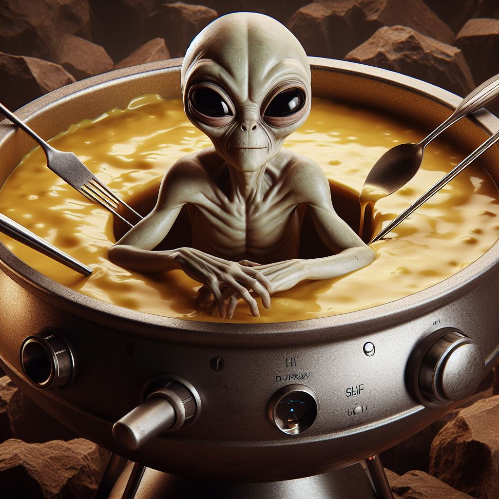

Alien Fondue

A creamy, steaming bowl of alien fondue is out of this world!
Behold a cosmic culinary delight, an enticing bowl of alien fondue, crafted not by mere hominids but by the deft appendages
of interstellar chefs! This isn’t just any dish; it’s a swirling nebula of experience, an artisanal concoction that defies gravity
and tantalizes the taste buds with its otherworldly, alpha-centaurian spices.
A universe of flavor awaits!
Ingredients
Cosmic Cream Base
- 1 cup of Milky Way milk
- 2 tablespoons of crushed comet cheddar
- 1 tablespoon of supernova Swizz cheese
Stellar Seasonings
- 1 teaspoon of asteroid salt, finely ground
- 1/2 teaspoon of Plutonian pepper
- A pinch of nebula nutmeg
Galactic Goodies
- A handful of Moon Dust mushrooms
- Thinly sliced Rings of Saturn onions
- Chopped cosmic kale
Big Dippers
- Meteorite morsels
- Comet crisps
- Asteroid almonds
Steps
- Cosmic Cream Base Preparation
- Begin by warming the Milky Way milk
in a large cauldron until it's just about to simmer.
- Gradually stir in the crushed comet cheddar
and Swizz cheese until melted and unified.
- Infusing Stellar Seasonings
- Once the base is creamy, sprinkle in the asteroid salt,
Plutonian pepper, and a pinch of nebula nutmeg.
- Stir the mixture with a meteorite rod, allowing
the seasonings to dissolve and spread their flavors evenly.
- Adding Galactic Goodies
- Toss in Moon Dust mushrooms and Rings of Saturn onion Rings,
stirring gently to incorporate them into the fondue.
- Let the cosmic kale drift down into the mix.
Watch as it wilts slightly, adding a vibrant green hue and a touch
of lightness to the dish.
- Final Touches
- With the fondue now complete, invite your happy alien friend
to take its place in the center of the bowl, ensuring its comfortable
and content.
- Encourage the alien to use its appendages to mix the fondue,
adding its own unique essence to the dish.
- Big Dippers Ready
- Arrange the meteorite morsels, comet crisps, and asteroid almonds
around the fondue bowl.
- Provide each guest with a long, slender fork or a
telekenetic field enhancer for dipping.
- Serving the Fondue
- Gather around the table with friends from all corners of the galaxy.
- Dip, swirl, and savor each bite, sharing tales of cosmic adventures
and interplanetary friendship.
- Enjoy!
- As you enjoy the fondue, take a moment to appreciate
the harmonious blend of flavors and the company of beings from
across the universe.
- Finish the meal with a round of applause for the chefs and
a heartfelt thank you to the happy alien in the bowl for its gracious
hospitality.